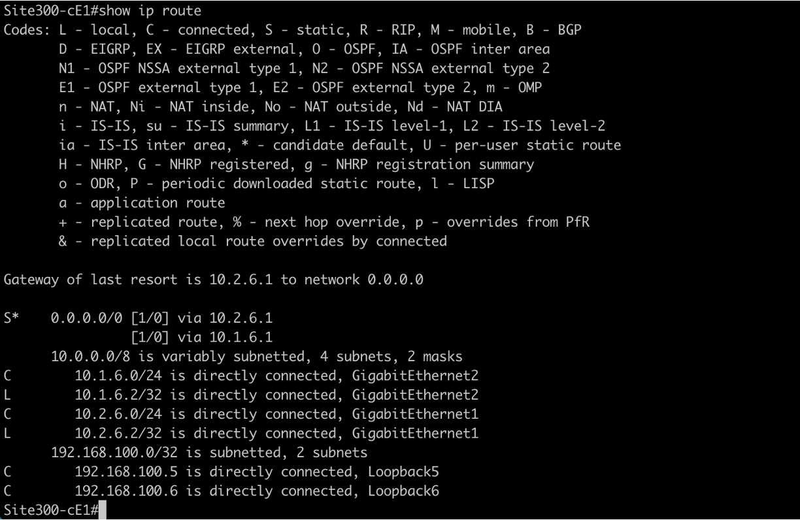
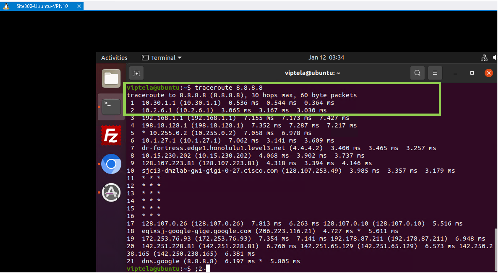

Task 4 - Direct Internet Access for Site-300
In this task we will enable (local) Direct Internet Access (DIA) for Site 300. Then the traffic on VPN-10 will be routed locally through this DIA. The DIA setup will allow to setup IPSec tunnels between Site-300 and Umbrella - thus providing Security from Umbrella Cloud. The IPSec tunnel configurations and connectivity will be done in a later task.
Step 1 - Enable DIA on Site300 VPN10
On node Site300-cE1, add a default route in VPN 10 pointing to VPN 0 (Global Routing Table). This is done by modifying the VPN10 template.
- On vManage, navigate to Configuration > Templates as shown below:

- Then click on
Feature Templatestab as shown in below screenshot:

- Then on the
search bar, search for Template name ofvpn_10_site300_ce1  - Further Click on the three dots
...on the right side of this feature template and clickEditas shown below:
- Click on IPv4 Route and enter following values

-
In the
IPv4 Routesection, perform below configurations:- Click
New IP Route - In Prefix :
0.0.0.0/0 - In Gateway :
VPN - In Enable VPN select
Globalfrom drop down menu
- Click
-
Then set Enable VPN to
On- Further click
Addbutton - Next, click on
Updatefor these changes to be accepted

- Further click
-
Then click
Nextto proceed forward with configuration

- Click
Configure Devicesat the bottom of the page to push the configuration from vManage towards cEdge:

- Lastly, wait and verify that Config-Push from vManage to cEdge device is
Successas shown below:

Step 2 - Verify Internet Connectivity on Site300 VPN10
_ - Open mPutty and logon to Site300-cE1 cEdge using SSH:

- Use the following command to verify routing table and the default route on vrf 10:
show ip route vrf 10

- Further verify that default route on Global Routing Table (VPN 0) points to
10.2.6.1and10.1.6.1by issuing below command:
show ip route vrf

-
Using mRemoteNG application on the RDP session, Logon again to Ubuntu on Site300 VPN10
-
On Ubuntu VM launch the Web browser and verify that Internet access is working.

- On Ubuntu VM open Terminal application, and initiate ping to 8.8.8.8 as per below command. As expected ping will be successful.
ping 8.8.8.8

- On Terminal application on Ubuntu VM, initiate a tracroute again for 8.8.8.8 using following command. Now the packets are going direclty to internet from Site-300 cEdge router
traceroute 8.8.8.8

Step 3 - Verify Internet Connectivity on Other VPNs
At this stage direct Internet access is only on Site300 VPN10. There is no internet connectivity on other VPNs.
- Verify lack of Internet connectivity on Site300 VPN12 Ubuntu host using mRemoteNG application on RDP